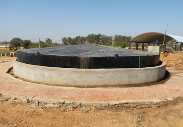
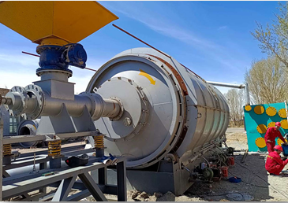
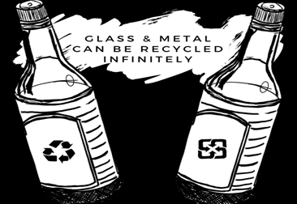

Our Site
This is the first solid waste management plant in Assam. It is located at Lekai, Thakurthan in Dibrugarh district of Upper Assam.

Collection of the overall waste products of Dibrugarh district,
Segregation of the wastes.
Decomposition of the waste and extracting the gas from it.
Methane gas will be used in fule cell for generation of electicity.
Remaining wastes will be used for the production of Fertilizers.
Plastic wastes are knows as pyrolysis.
Production of diesel, petrol, neptha and cole.
Main goal is to complete utilize the solid waste
The purpose of the Bio-Methanation Plant is to utilize organic waste and produce biogas to be. used
as fuel in gas based engines.

The pyrolysis plant is a machine converts mainly wasate plastic/tyre to fuel oil. The raw material
will be heated in a reactor.

The broken pieces are crushed, sorted, cleaned, and prepared to be mixed with other raw materials
like soda ash and sand. The raw materials are melted in a furnace and then shaped into moulds to
make new bottles.

This is the first solid waste management plant in Assam. It is located at Lekai, Thakurthan in Dibrugarh district of Upper Assam.